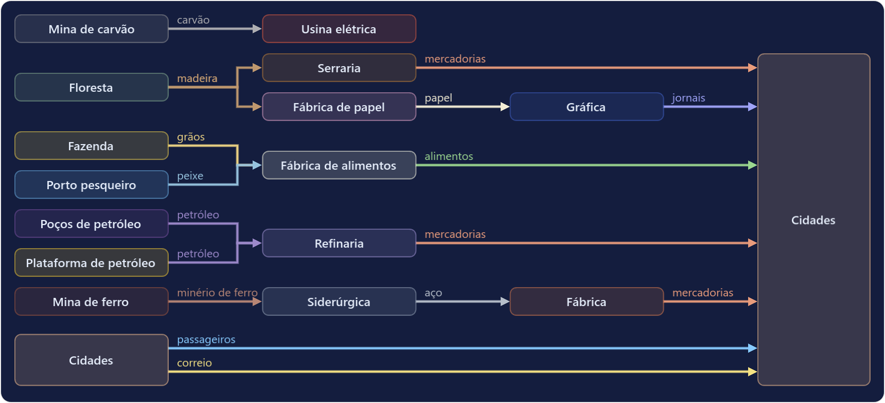
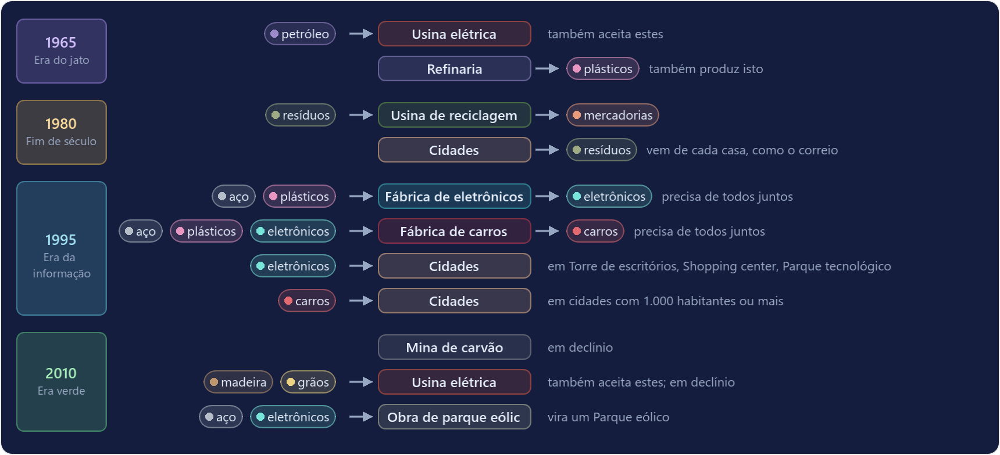

Cadeias industriais
O que vai para onde.
As matérias-primas vão para uma indústria que as transforma em algo que as cidades querem. Cada seta é uma entrega pela qual você recebe, então uma cadeia inteira paga mais de uma vez. Estas são as cadeias de um jogo iniciado em 1950:


- Uma fábrica transforma cada unidade entregue em mais ou menos uma unidade de produto, pronta para ser recolhida alguns dias depois: mais com o pessoal completo, menos com poucos trabalhadores (veja Trabalhadores).
- O carvão termina na usina elétrica: dela não sai nada.
- A madeira tem dois clientes: a serraria faz mercadorias com ela, a fábrica de papel faz papel para a gráfica, que fica junto a uma das maiores cidades.
- Os jornais ficam velhos após 2 dias, por isso leve-os depressa: caminhões, pequenos trens a diesel e aviões postais os transportam. Qualquer casa de uma cidade com 150 habitantes ou mais os aceita.
- De vez em quando uma indústria muda a sua produção. Se a maior parte da carga for transportada, ou tiver muito pessoal, é muito mais provável que cresça do que diminua.
- O Mapa do mundo (M) mostra para onde cada indústria do seu mapa poderia entregar.
As eras mudam as cadeias
Cada nova era traz novas indústrias e dá carga nova às antigas. Um novo tipo de indústria abre no mapa quando a sua era começa (numa partida iniciada mais tarde, já está lá desde o início).


- Dois materiais: a fábrica de eletrônicos precisa de aço e plásticos juntos. Ela guarda o que você traz até o outro chegar, e cada tonelada de aço com uma de plásticos dá cerca de duas caixas de eletrônicos.
- Os resíduos vêm de cada casa na área de uma estação, assim como o correio. Uma usina de reciclagem os transforma em mercadorias.
- Os eletrônicos pagam bem mas estragam em dias: caminhões rápidos, trens ou aviões de carga.
- Três materiais: a fábrica de carros precisa de aço, plásticos e eletrônicos juntos, e cada conjunto de um de cada dá cerca de três carros. A janela dela diz qual material a está travando.
- Os carros pagam bem mas são volumosos: só o Atlas Car Transporter e os vagões cegonha os levam, 10 por vagão. As cidades com 1.000 habitantes ou mais os aceitam.
- As obras de parque eólico precisam receber 1.000 toneladas de aço e 600 caixas de eletrônicos; quando tudo chega, a obra vira um parque eólico. As cidades a até 24 quadrados esperam então só 80% do tempo entre um salto e outro, e as empresas que entregaram dividem até +25 de avaliação com suas prefeituras, conforme o que cada uma trouxe.
Aberturas e encerramentos
- A cada poucos anos abre uma indústria nova, de qualquer tipo que o mapa tenha: uma mina, fazenda, floresta, poço, plataforma ou porto onde couber, uma fábrica perto de quem produz o que ela aceita. Ela nunca surge sobre algo construído.
- Quando uma era traz um novo tipo de indústria, abre uma por mês até o mapa ter a sua cota.
- Uma mina, fazenda ou poço que ninguém serve há dois anos, e cuja produção caiu para 75% do habitual, pode entrar em dificuldades. O que tem falta de pessoal é o primeiro.
- As notícias avisam um ano antes do encerramento, e a janela e a ficha dela dizem quando. Transporte a carga dela antes disso e ela não fechará.
- As fábricas nunca fecham (exceto as usinas elétricas, abaixo), nem a última indústria de um tipo, então todas as cadeias continuam possíveis.
- As indústrias em declínio já não abrem. A partir de 2010, uma usina elétrica que ninguém abasteceu em dois anos também pode ter dificuldades e fechar.
- Quando uma fecha, as estações ao lado deixam de fornecer a carga dela, e os rivais abandonam as linhas que a atendiam. Uma plataforma de petróleo leva sua doca junto.
Quanto cada indústria produz está em Tabela de indústrias.